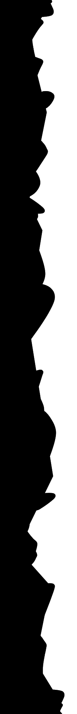

What is lead climbing?
Lead climbing is a climbing style, predominantly used in rock climbing. In a roped
party one climber has to take the lead while the other climbers follow. The lead climber
wears a harness attached to a climbing rope, which in turn is connected to the other climbers
below the lead climber. While ascending the route, the lead climber periodically connects
the rope to protection equipment for safety in the event of a fall. This protection can consist of
permanent bolts, to which the climber clips quickdraws, or removable protection such as nuts and cams.
One of the climbers below the lead climber acts as a belayer. The belayer gives out rope while the lead
climber ascends and also stops the rope when the lead climber falls or wants to rest.